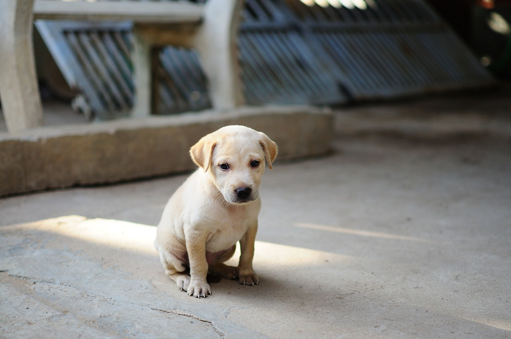

Meet Dodo - Your new best friend!
Dodo is a playful, affectionate, and curious little pup who loves to explore his surroundings! He was found stray, but despite his rough start, he has blossomed into a happy ad loving pup in his foster home.
Meet Maple - Your best companion!
Maple was rescued as a tiny stray but has adapted wonderfully in her foster home. She's a confident little explorer who loves to climb and play. She's looking for a forever family to shower her with love!

Meet Dobby- The Cutest Bunny!
Dobby was surrendered by her previous owner due to a chance in living circumstances. She has been in foster care, where she has learned to trust humans and is looking for a forever home...
Meet Hershey - Sweetest Beagle
Hershey was part of an unexpected litter, and his previous owner couldn't care for all the puppies. Now he's in a loving foster home, learning how to be the best companion ever! He's full of energy and can't wait...